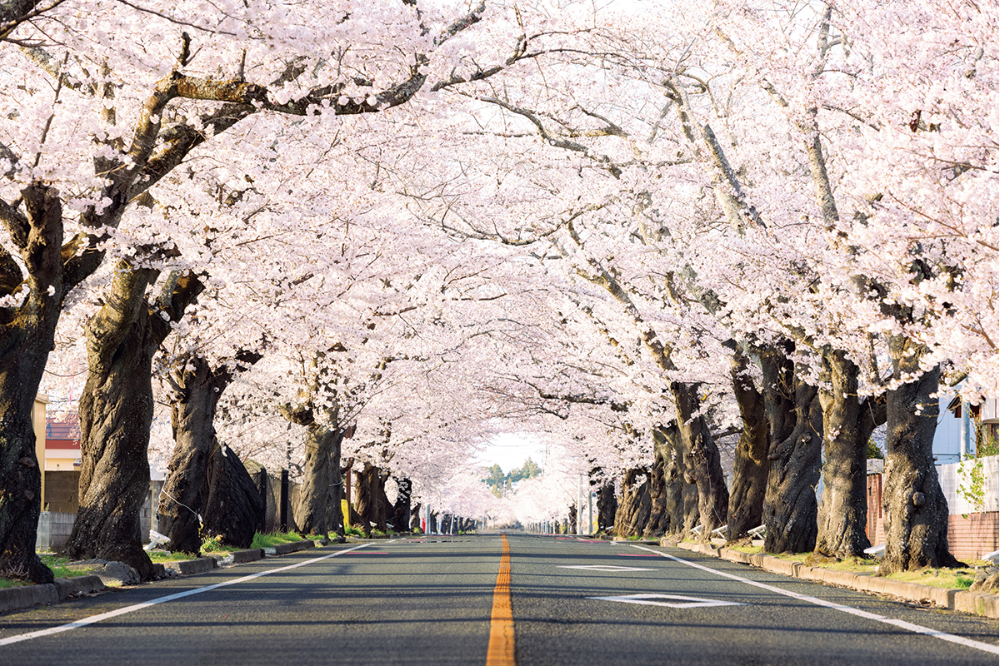
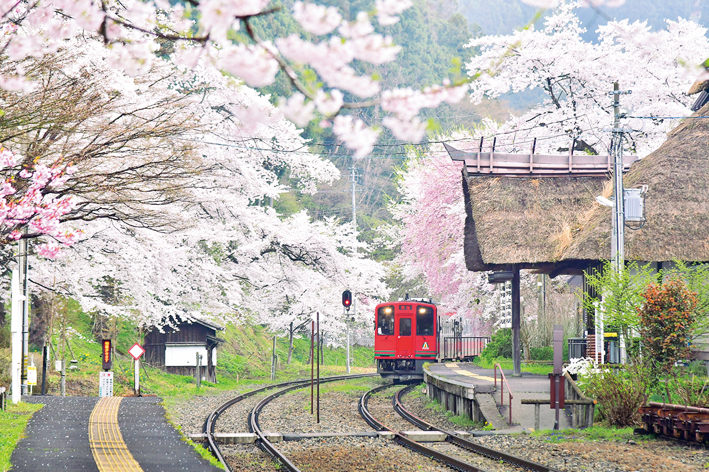
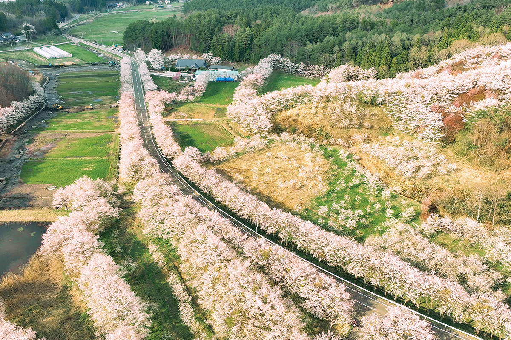
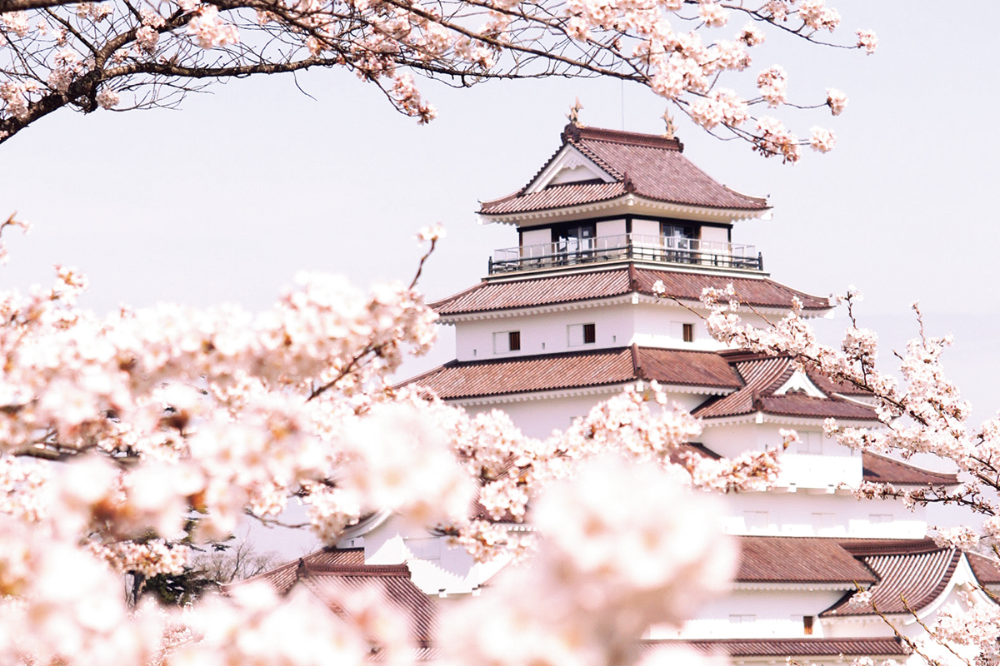
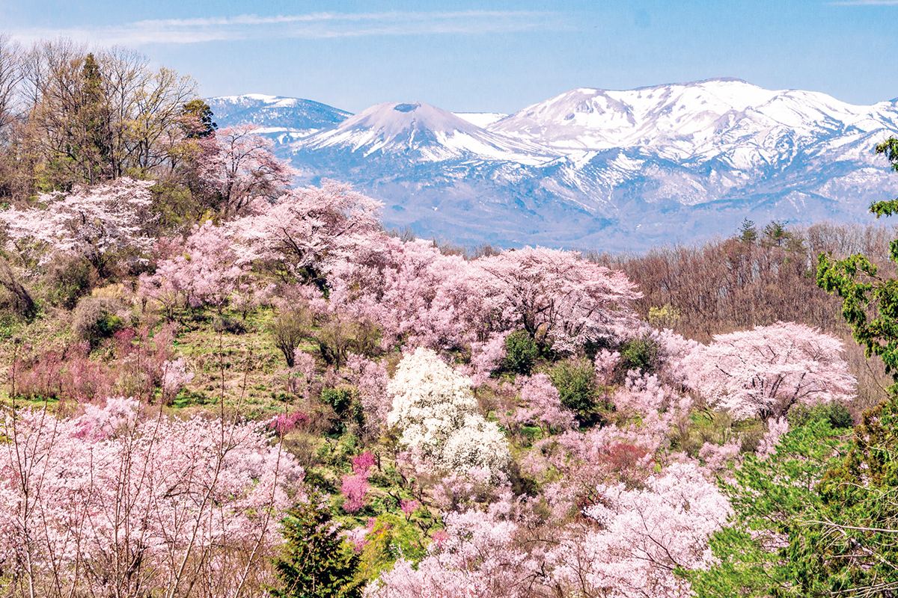
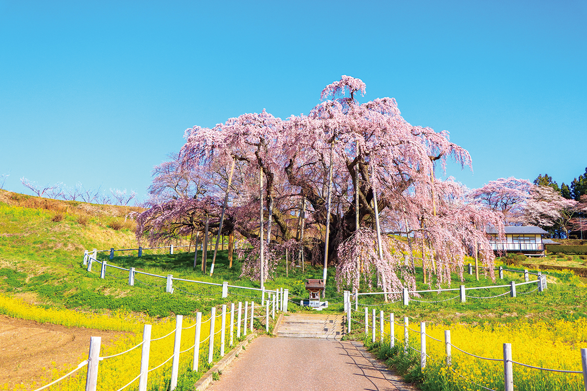

Префектура Фукусима · Томиока, Айдзу, Михару · сакура
Сакура Фукусимы через 15 лет после 2011 года: шесть мест, где весна хранит память

В 2026 году с землетрясения и цунами 11 марта 2011 года прошло 15 лет. Сакура в Фукусиме цветёт и там, где города пустели после аварии на АЭС, и у старого замка, а одному из деревьев больше тысячи лет.
Весна
Сакура идёт на север
Фронт цветения сакуры, линия, которая соединяет даты раскрытия цветов сорта сомэй-ёсино, в 2026 году по прогнозу начинал путь в конце марта с Кюсю и юга Сикоку. Через регион Тохоку, от Фукусимы до Аомори, он проходит примерно за месяц. Поэтому здесь удобно ехать с юга на север и встречать цветение в одном месте за другим.
Прогноз на весну 2026 года обещал раннее тепло с начала марта: на севере и востоке Японии бутоны должны были набухать быстро, а цветение прийти немного раньше обычного. В Тохоку Фукусима на этом пути первая.
Томиока
Тоннель сакуры в Ёномори
Начало аллее положили переселенцы эпохи Мэйдзи (1868–1912), которые посадили здесь первые деревья. Жители города Томиока поколениями берегли эти сакуры: из примерно 420 деревьев сомэй-ёсино многим больше ста лет. Аллея тянется около 2,2 км от места, где стояла вторая средняя школа Томиоки, до парка Ёномори, и в полном цвету превращается в тоннель, под которым почти не видно неба.
После землетрясения и аварии на АЭС 11 марта 2011 года весь город на время эвакуировали. К 2026 году приказ об эвакуации был снят примерно на 93% территории Томиоки. Сакуре есть для кого цвести, только когда к ней приезжают люди.
Тоннель сакуры в Ёномори
- Адрес
- префектура Фукусима, уезд Футаба, Томиока, Ёномори
- Телефон
- +81 240-22-2111 (мэрия Томиоки, отдел туризма)
- Даты
- праздник сакуры «Ёномори сакура мацури» в 2026 году прошёл 4 и 5 апреля в парке Ёномори, 9:00–15:00
- Цены / Вход
- бесплатно
Симого
Станция Юноками-Онсэн
Вдоль платформы растут около 30 деревьев: сомэй-ёсино, плакучая сакура и горная ямадзакура. Ярко-красный поезд, цветом похожий на лак Айдзу, подходит к станции с соломенной крышей на фоне бледно-розовой дымки, и эта картина напоминает живопись.

Лучшее место для любования цветами это ножная ванна «Оякодзидзо-но ю» рядом со зданием станции. Можно сидеть, жмурясь от весеннего солнца, а можно ловить кадры с поездом и сакурой. Онсэн Юноками со времён Эдо (1603–1868) принимает тех, кто приезжал лечиться на водах, и в посёлке сохранился тот старый японский пейзаж, который кажется знакомым даже тем, кто здесь впервые.
Станция Юноками-Онсэн (железная дорога Айдзу)
- Адрес
- префектура Фукусима, уезд Минамиайдзу, Симого, Юноками, Осима-оцу, 74
- Телефон
- +81 241-68-2533
- Даты
- ярмарка «Сакура марше» на станции в 2026 году прошла 18 апреля, 10:00–15:00, вход свободный
Иитатэ
Три тысячи сакур возрождения
Супруги, которые разводили шелкопряда, посадили саженцы сакуры на своём тутовом поле. Когда приходит время цветения, деревья наперебой окрашивают горную деревню в бледно-розовый цвет.

После аварии на АЭС всю деревню Иитатэ эвакуировали, но и в эти годы супруги не переставали ухаживать за деревьями. В 2017 году приказ об эвакуации сняли, и они с помощью волонтёров снова начали сажать сакуру, чтобы у жителей деревни было место, где можно собраться вместе. Около 3000 деревьев цветут в чистом горном воздухе, и рядом с ними становится спокойно на душе.
«Иитатэ: три тысячи сакур возрождения»
- Адрес
- префектура Фукусима, уезд Сома, Иитатэ, Итамидзава, Сасаносава, 153
- Телефон
- +81 244-42-1620 (мэрия Иитатэ, отдел туризма)
- Даты
- о празднике «Фукко сандзэмбон сакура мацури» сообщают в соцсетях и на официальном сайте, Instagram @e_village_life_iitate
Айдзу-Вакамацу
Замок Цуругадзё
Около 1000 деревьев сакуры делают замок Цуругадзё главным местом любования цветами в Айдзу. Первыми зацветают ранние сорта вроде такато-кохиган, за ними плакучая сакура и сомэй-ёсино: разные деревья раскрываются по очереди, и цветение здесь длится долго.

Главная башня Цуругадзё единственная в Японии покрыта красной черепицей и выглядит так, как в конце эпохи Эдо, когда на неё смотрели юноши из отряда Бяккотай. Так назывался отряд юных самураев княжества Айдзу, воевавший в войне Босин в 1868 году. Строгий силуэт замка красив рядом с нежными цветами, а вечером подсвеченная сакура отражается в воде рва.
Замок Цуругадзё
- Адрес
- префектура Фукусима, Айдзу-Вакамацу, Отэ-мати, 1-1
- Телефон
- +81 242-27-4005 (туристическое бюро Айдзу-Вакамацу)
- Даты
- праздник сакуры «Цуругадзё сакура мацури» в 2026 году прошёл с 1 апреля по 6 мая на территории главной цитадели, вход свободный
Город Фукусима
Парк Ханамияма
Японский фотограф Сётаро Акияма (1920–2003) назвал это место раем: «В Фукусиме есть свой край персиковых цветов». Цветочный сад площадью около 50 000 м² каждый год собирает людей со всей страны, хотя на самом деле это частная гора. Всё началось с отца и сына, которые разводили шелкопряда и решили стать садоводами: они расчистили лес под цветущие деревья.

Когда на склонах горы Адзума-Кофудзи начинает таять снег, это знак, что пришла весна. Тогда разом зацветают сакура токай-дзакура, японская айва, форзиция, сакура хиган-дзакура и другие деревья, и вся округа окрашивается в весенние цвета.
Парк Ханамияма
- Адрес
- префектура Фукусима, город Фукусима, Ватари
- Телефон
- +81 24-531-6428 (туристический центр города Фукусима)
- Даты
- ярмарка «Ханамияма буссан хироба» в 2026 году работала с 28 марта по 19 апреля, 9:30–16:00 (лавки и фудтраки), вход свободный
Михару
Такидзакура
В 1922 году Михару Такидзакура первой из всех сакур страны получила статус природного памятника. Вместе с Яматака Дзиндай-дзакура в префектуре Яманаси и Нэодани Усудзуми-дзакура в префектуре Гифу её относят к трём великим сакурам Японии.

Высота дерева около 13,5 м, обхват ствола около 9 м, а возраст оценивают больше чем в тысячу лет. При этом ветви каждый год прирастают на 10–50 см. В пору цветения со всех веток, раскинутых во все стороны, свисают бесчисленные мелкие бледно-розовые цветы, но распускаются они только на приросте прошлого года. Каждой весной старое дерево удивляет тем, сколько в нём жизни.
Михару Такидзакура
- Адрес
- префектура Фукусима, уезд Тамура, Михару, Таки, Сакуракубо
- Телефон
- +81 247-62-3690 (корпорация развития Михару, отдел туризма)
- Даты
- подсветка от полного цвета до появления листьев, 18:00–21:00
- Цены / Вход
- подсветка 500 иен (2026 год)